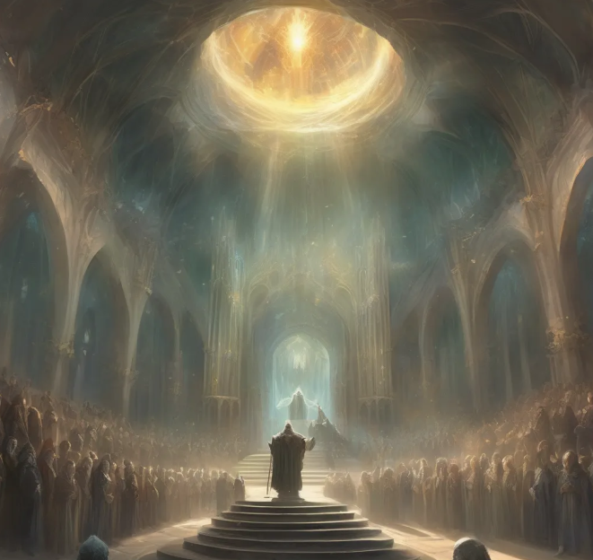
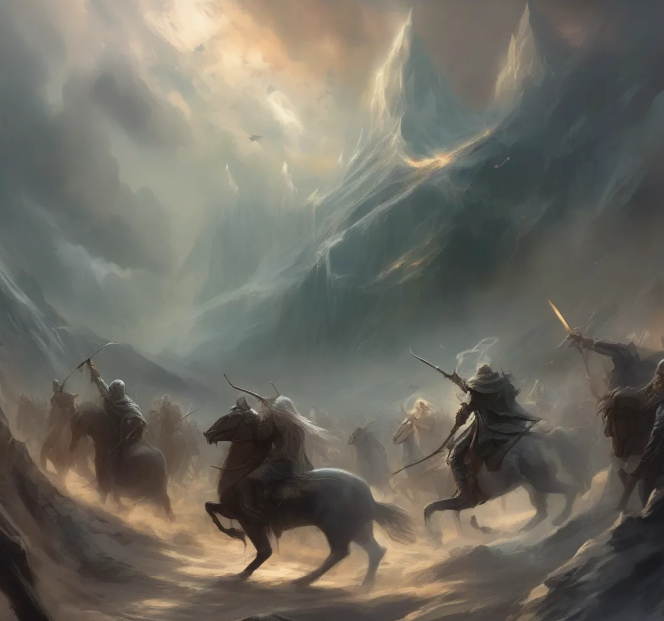

10 Rounds Quiz
De "10 Rounds Quiz" is een uitdagend spel waarbij deelnemers LOTR-quotes moeten koppelen aan de juiste personages. Voor elke juiste combinatie krijg je 1 punt, en voor een deel van de combinatie 0,5 punt. Na 10 vragen stopt het spel en wordt de eindscore getoond. Het is een leuke manier om je kennis van "The Lord of the Rings" te testen en de magie van "Middle-earth" opnieuw te beleven.

Sudden Death Quiz
De "Sudden Death Quiz" is een snelle en uitdagende spelervaring waarbij deelnemers LOTR-quotes moeten matchen met de juiste personages. Voor elke juiste combinatie wordt één punt toegekend. Echter, bij een fout of half antwoord, wordt onthuld hoeveel opeenvolgende vragen correct werden beantwoord. Het doel is om zo ver mogelijk te komen door zoveel mogelijk juiste combinaties te maken voordat een fout wordt gemaakt. Deze intense dynamiek voegt een element van spanning toe aan de quiz en zorgt voor een opwindende spelervaring.